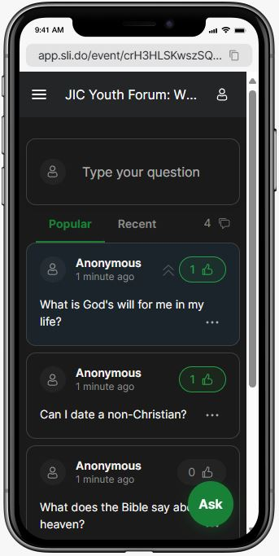

- Ask Questions No limits - any question is legit
- Biblical Answers We will deep dive with panelists
- Anonymous Ask without fear


Got questions that need answers? Curious about what God says about them? You're invited to our Bible Question & Answer Forum!
We believe that the Bible is fully sufficient - it is all we need to equip us for a life of faith and service. Ask literally any question and let us find the answer in the Bible together!
2 Timothy 3:16 - "All scripture is given by inspiration of God, and is profitable for doctrine, for reproof, for correction, for instruction in righteousness:"
We will be using a platform called Slido!
Link: JIC Youth Forum Live Q&A
Just open the link, type your question, and send - try it! :)
RSVP today @ Google Form
Upvote their question to the top!